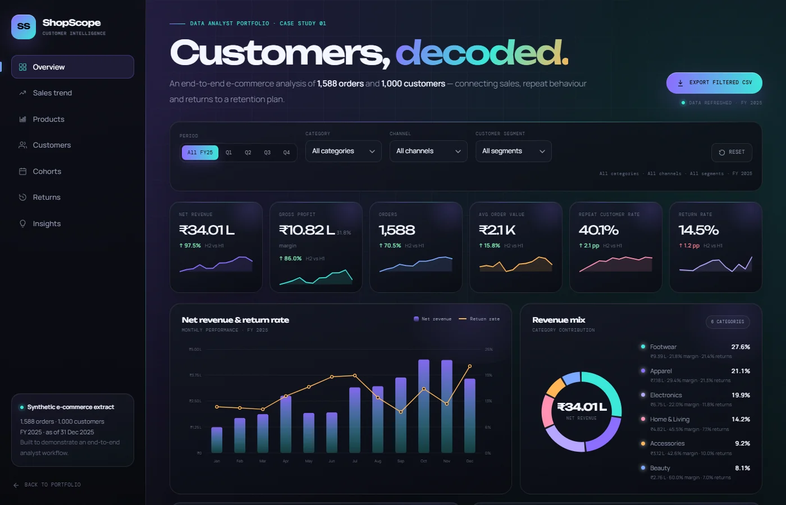

Where is revenue coming from?
Which categories, products, channels and customer segments build net revenue — not just gross sales?
Case study · Data analytics · 2026
A decision surface for a D2C lifestyle brand that was growing revenue but missing the story behind its orders, customers and returns.
01 The problem
NovaCart had revenue, orders and a returns spreadsheet. What it did not have was a shared, trustworthy view of which customers and categories were actually creating value.
Which categories, products, channels and customer segments build net revenue — not just gross sales?
Who repeats, who is drifting, and which segments deserve protection or a win-back play?
Which categories and return reasons are quietly eroding margin, and how much is at stake?
The deliverable: a single decision surface for commercial and CRM teams, backed by a repeatable SQL + Python pipeline and a Power BI build kit.
See what the data said ↓
02 Approach
The analysis was built in layers so every number on the dashboard could be traced back to a table, a query and a decision.
Built a star schema around orders, customers, products and returns. Ran duplicate, missing-value, refund and orphan checks before analysis.
0 data-quality failuresWrote SQL Server 2008-compatible queries for KPIs, RFM scoring with NTILE, cohort retention, channel mix and return reasons.
SQL · PythonTurned the output into a filterable dashboard with custom SVG charts, RFM segments, cohort heatmap and returns drilldown.
One decision surfaceConnected each finding to a rupee impact, then documented the pipeline, Power BI build kit and next actions.
Insight → action03 Findings
Three patterns changed the conversation: where the money comes from, who protects it, and what quietly gives it back.
Footwear contributes 27.6% and apparel 21.1% of net revenue — but both return more than one in five orders.
Footwear return rate 21.4% · Apparel 21.3%Champions + Loyal Customers drive 49.0% of net revenue. At Risk customers hold 21.8% of revenue — 220 people worth prioritising.
At Risk AOV ₹1,812 · 2.3 avg ordersSize/fit accounts for 35.9% of returns. Footwear alone accounts for ₹2.47L in refunds.
231 returns · ₹5.83L refunded04 Recommendations
The analysis was only useful once it pointed to a small set of decisions with a visible rupee impact.
Add fit guidance, model measurements and review-led size prompts for footwear and apparel. Make size confidence part of the product page, not a support ticket.
A 2 pp return reduction avoids ~₹33K · 10 pp protects ~₹1.7L220 At Risk customers hold 21.8% of revenue at an AOV of ₹1,812. A focused reactivation play is a better use of budget than a blanket discount.
10% reactivation at current AOV ≈ ₹40K net revenueTrigger a personalised recommendation and fit reminder 21–35 days after first delivery. Month-1 retention is the biggest lever in the cohort matrix.
Protect Champions with early access, not discounts05 Deliverables
The project is not a static screenshot. The data generator, analysis layer, dashboard and Power BI kit are all in the repository.
Filterable KPI, RFM, cohort and returns views.
Open dashboard ↗ SQLSQL Server 2008 queries for KPIs, RFM and cohorts.
View SQL ↗ PythonPandas analysis that rebuilds the dashboard payload.
View Python ↗ Power BIModel, DAX measures, theme and report spec.
View build kit ↗ DocsData model, quality checks, findings and next steps.
Read README ↗